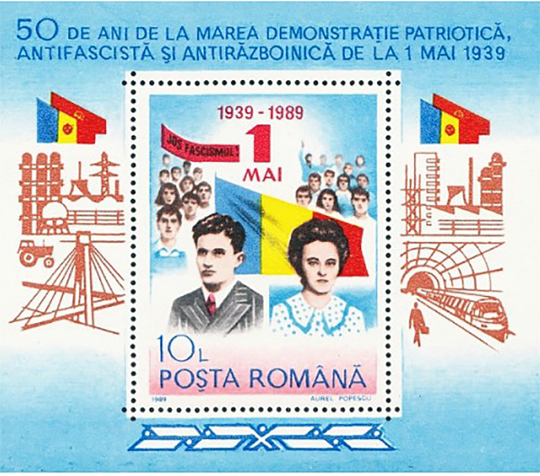
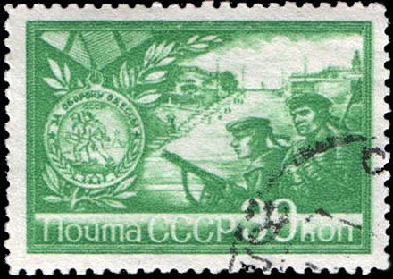
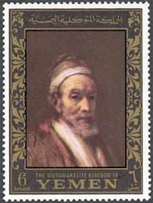
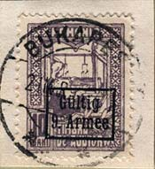
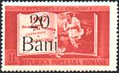

History
Explore the events, personalities and turning points of Romanian history through stamps and original research.

Cult of Personality Patriotic Defense 1945
Patriotic Defense 1945 The Milking Cows
The Milking Cows
Odessa Massacre
Stamps Printing Repetition of Postal History
Repetition of Postal History Dracula
Dracula
Romania in WWI Royal Dictatorship
Royal Dictatorship Fascism
Fascism Transnistria
Transnistria The Last King
The Last King
Farming Crimes - The Black Sea Canal
Crimes - The Black Sea Canal Census
CensusComplete article directory
Articles retain their original text and illustrations in the refreshed layout.